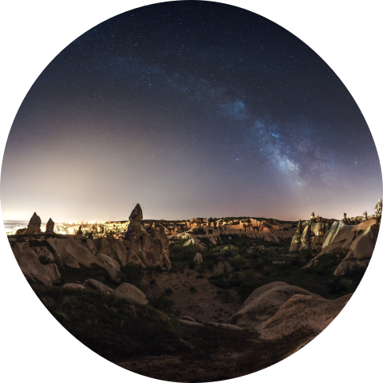
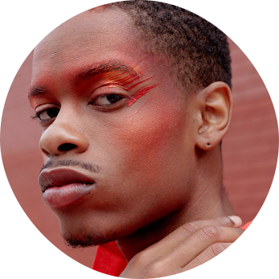

In an increasingly disconnected world, spaced or true connection and
presence are rare. The Beyond exists to create, nurture and protect these
spaces. We're here to challenge conventional ideas and to explore deeper
truths. The Beyond is more than a festival... It's a community in which those
who have always felt there was something more, something beyond, connect
to find purpose, meaning and magic.
presence are rare. The Beyond exists to create, nurture and protect these
spaces. We're here to challenge conventional ideas and to explore deeper
truths. The Beyond is more than a festival... It's a community in which those
who have always felt there was something more, something beyond, connect
to find purpose, meaning and magic.
- About beyond


Beyond
Cappadocia

August 26th-29th 2021
Cappadocia, Turkey
Nestled in an area of incredible natural beauty, Beyond Cappadocia connects
you with the cultural heritage and geological wonder of Cappadocia, combined
with live music, acts, and emerging music talent. Expect themed immersive
parties, culinary adventures, provocative workshops from global thought
leaders and awe-inspiring explorative wellness journeys.
you with the cultural heritage and geological wonder of Cappadocia, combined
with live music, acts, and emerging music talent. Expect themed immersive
parties, culinary adventures, provocative workshops from global thought
leaders and awe-inspiring explorative wellness journeys.

Line Up
Artists
Practitioners

Matias Da Via
Matias Da Via, is a self-taught musician born in
Cordoba, Argentina. He has long explored the power
of sound and frequency, through his voice and
instruments; his mission is to reconnect his audiences
to their inner voice, allowing each individual to find
themselves in the notes he strings together.
Cordoba, Argentina. He has long explored the power
of sound and frequency, through his voice and
instruments; his mission is to reconnect his audiences
to their inner voice, allowing each individual to find
themselves in the notes he strings together.